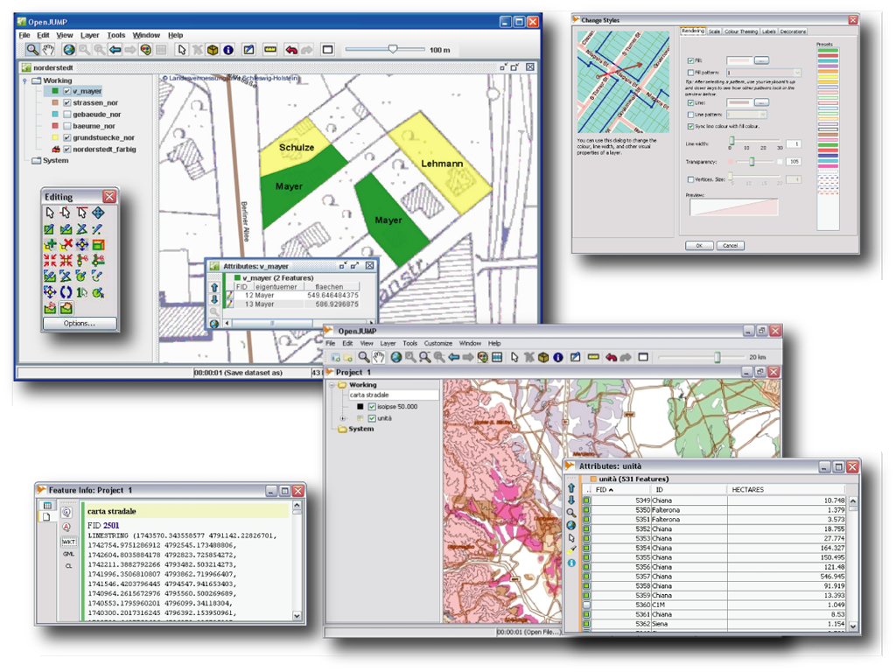

OpenJUMP SIG¶
SIG de escritorio¶
OpenJUMP es un potente SIG de escritorio fácil de usar que permite a los usuarios visualizar, editar, analizar y combinar datos geográficos. Viene en un CORE y una edición PLUS, agregando en este último muchos plugins útiles. OpenJUMP es excelente para la edición de datos y la creación rápida de prototipos de funciones SIG.
{kind=link}
Características (características principales y PlugIns*)¶
Formatos de datos
Lee (archivos): GML, SHP, DXF+, MIF*, CSV+, KML+, OSM* y TIFF, ASCII grid, JPG PNG, JPEG2000, MrSID*, ECW +
Lee (DB): PostGIS, ArcSDE*, Oracle*, MySQL*, SpatiaLite, H2 Spatial+, MariaDB+
Lee (estándares OGC): WKT WMS, KML+, GeoPackage
escribe: GML, SHP, WKT, DXF+, CSV+, PostGIS y JPG, TIFF, ASCII grid*, SVG+
Nota, formatos marcados con (*) requieren un plugin adicional y con (+) son parte de la edición PLUS.
Edición y fusión
dibujar puntos, líneas, multi-geometrías, colecciones de geometría y círculos (eventualmente mezclado en una sola capa)
Agregar, mover, eliminar vértices
rotación, escalamiento, autocompletar polígono
cortar, combinar, simplificar polígonos y líneas
envolver, herramientas de aseguramiento de la calidad
conversiones de coordenadas entre CRS
Análisis y consulta
Funciones de consulta espaciales y de atributos
Análisis: buffer, superposición, centroide, casco convexo…
Estadísticas: longitud, área, capa estadísticas, estadísticas de atributo, parcelas…
herramientas de edición: convertidor, noder, poligonizador, gráfico planar, topología de limpieza PLUS de edición ,…
herramientas de transferencia de atributos: Join, coincidencia*
La caja de herramientas de análisis raster SEXTANTE incluida en la edición PLUS
Personalización
internacionalización (cz, de, en, es, fi, fr, hu, él, ja, pt, ta, zh)
proporciona una API de de secuencias de comandos, via BeanShell y Java Python/Ython
Sistema de plugins (Java)
Estándares implementados¶
Estándares OGC compatibles: GML2, SFS, WMS, KML, SLD, GeoPackage (lectura);
Detalles¶
Sitio web: http://www.openjump.org
Licencia: GPL
Versión de software: 1.15.1
Plataformas compatibles: GNU/Linux, Mac OSX, MS Windows, Unix
Apoyo de la comunidad: http://www.openjump.org/support.html
Soporte Comercial: https://ojwiki.soldin.de/index.php?title=Professional_Support_Page
Página de descarga: https://sourceforge.net/projects/jump-pilot/files/